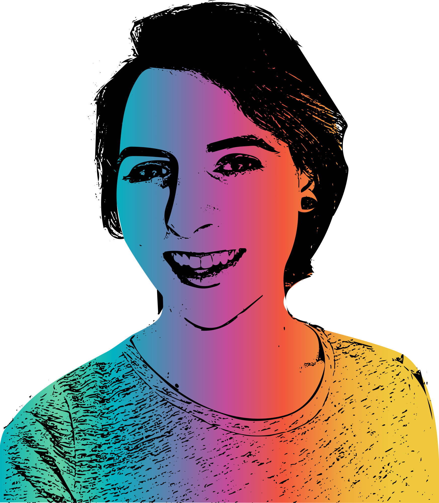

Cory Timmons was born under a Gemini Sun and a Pisces Moon in the late 1980s.

She’ll earn her BS in art and design from Western Oregon University in June 2019.

She spends her free time making art.
Painting, writing, collaging, making video, doing drag, and making stuff for the ‘netz are her favorite media.
Professionally, she’s an instructional designer.
Her other hobbies include DIY bullshit at home, playing video games, tumbling rocks, gardening, and eating chocolate cake.
She’s nearsighted.
Her favorite art tends to be expressive, humorous, and narrative.
She’s a married, queer heterosexual with two dogs and a cat. (She’s barren. 😉)
She likes drag-y music.
Humorous, light, quick-paced novels with a bit of crass fill her kindle, alongside nonfiction about gender and politics and fantasy fiction.
You’ll often find her at thrift shops flipping through racks looking for clothes, housewares, materials, or projects (see above).
Her favorite color is cerulean.
Her politics are radical.
She likes pants.
She’d love to work with you.